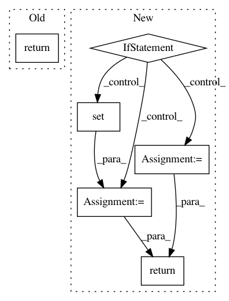

cf4379b2fc6ec480a801397aa8481f6a55ba5c6e,graphbrain/meaning/ontology.py,,subtypes,#,4
Before Change
def subtypes(hg, edge):
ont_edges = hg.search((const.type_of_pred, "*", edge))
return tuple([ont_edge[1] for ont_edge in ont_edges])
def supertypes(hg, edge):
ont_edges = hg.serch((const.type_of_pred, edge, "*"))
After Change
def subtypes(hg, edge, deep=False):
ont_edges = hg.search((const.type_of_pred, "*", edge))
subs = set([ont_edge[1] for ont_edge in ont_edges])
if deep:
new_subs = set()
for sub in subs:
new_subs |= subtypes(hg, sub, deep=True)
subs |= new_subs
return subs
def supertypes(hg, edge, deep=False):
ont_edges = hg.search((const.type_of_pred, edge, "*"))
In pattern: SUPERPATTERN
Frequency: 4
Non-data size: 6
Instances
Project Name: graphbrain/graphbrain
Commit Name: cf4379b2fc6ec480a801397aa8481f6a55ba5c6e
Time: 2019-08-01
Author: telmo@telmomenezes.net
File Name: graphbrain/meaning/ontology.py
Class Name:
Method Name: subtypes
Project Name: BVLC/caffe
Commit Name: 3ef43e41e74f4cebf8b1be006bf0b596a6b37e5a
Time: 2014-07-18
Author: jonlong@cs.berkeley.edu
File Name: python/caffe/pycaffe.py
Class Name:
Method Name: _Net_forward
Project Name: graphbrain/graphbrain
Commit Name: cf4379b2fc6ec480a801397aa8481f6a55ba5c6e
Time: 2019-08-01
Author: telmo@telmomenezes.net
File Name: graphbrain/meaning/ontology.py
Class Name:
Method Name: supertypes
Project Name: BVLC/caffe
Commit Name: 3ef43e41e74f4cebf8b1be006bf0b596a6b37e5a
Time: 2014-07-18
Author: jonlong@cs.berkeley.edu
File Name: python/caffe/pycaffe.py
Class Name:
Method Name: _Net_backward